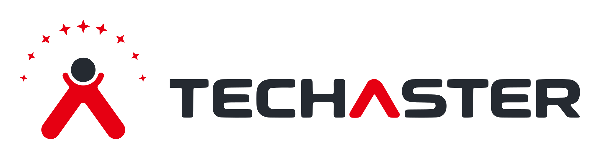

ITプロジェクト支援
準委任契約により、お客様の現場で技術者が業務を担当します。案件の要件に合う技術者を選び、体制をご提案します。
必要な技術者・体制をご提案し、継続的な業務遂行と品質向上を支援します。

株式会社テックアスターCOMPANY PROFILE
| 会社名 | 株式会社テックアスター（TECHASTER） |
|---|---|
| 設立 | 2017年11月 |
| 代表者 | 潘龍 鉄成 |
| 資本金 | 480万円 |
| 所在地 | 〒220-0004 神奈川県横浜市西区北幸二丁目10番48号 むつみビル3階 |
| 体制 | 代表者を窓口とし、案件の内容に応じて協業先と連携して事業を行っています。 |
準委任契約により、お客様の現場で技術者が業務を担当します。案件の要件に合う技術者を選び、体制をご提案します。
必要な技術者・体制をご提案し、継続的な業務遂行と品質向上を支援します。
案件の内容に応じて協力会社とも連携し、要件定義からリリース・運用まで対応します。
小規模開発から技術検証、研究テーマの企画・推進まで、積極的に対応します。
業務の課題を伺い、業務効率化に向けて、AIサービスの業務への取り入れ方を提案します。
DXからAXへの変革に向け、AI活用の提案・導入から定着・安定運用まで支援します。
| 領域 | 支援内容 |
|---|---|
| インフラ関連 | サーバー｜Linux/UNIX（AIXを含む）/Windowsの設計・構築・運用 |
| ネットワーク｜転送装置（ルーター/PTN）、L2/L3ネットワークの設計・構築・更改、運用・保守 | |
| ストレージ｜ストレージ基盤の設計・構築・運用 | |
| クラウド仮想化基盤｜AWS/Azure/GCP、VMwareの構築・移行・運用 | |
| セキュリティ｜サイバーセキュリティ対策、脆弱性診断・SOC及びCSIRT支援 | |
| ソフトウェア開発 | 対応工程｜上流設計から開発・テスト・リリースまで（要件定義から導入・リリース・保守運用） |
| 技術・開発領域｜多様な業務・技術領域に対応（業務システム、Web・アプリケーション、通信・ネットワーク、組み込みシステムなど） | |
| プロジェクトマネジメント｜PM・PMOによるプロジェクト推進支援（計画策定、進捗・課題・リスク・品質・コスト管理、関係者調整など） | |
| 研究開発・技術検証｜新技術の調査・検証から共同研究まで（データ分析などの技術調査、実証検証、プロトタイプ開発など） |
語学力 × 技術力 × 実務経験を兼ね備えた技術者・専門人材の提案にも対応します。
| 対応領域 | 対応業務・工程 | 主な対応事例・技術 |
|---|---|---|
| 通信ネットワーク基盤 | ネットワーク運用・保守、設備更改、機器アップグレード、移行支援 | MPLSネットワークの運用・保守、約9,000台規模の通信機器アップグレード |
| 組み込みソフトウェア・機器制御 | 基本設計、開発、試験、進捗管理、PL業務 | 決済端末の通信モジュール、医療用モニターの制御アプリケーション |
| 通信ソフトウェア・プロトコル | ソフトウェア設計・実装、接続制御、通信試験・評価 | 3G／PHS／Wi-Fi接続ツール、VPN接続機器、IPsec・KINK認証モジュール |
| 金融システム・データ連携 | 課題分析、テスト計画・設計、移行リハーサル、単体試験～受入試験 | 銀行システム基盤、データ連携システムの移行支援 |
多様なプロジェクトでの参画実績と専門技術を活かし、お客様のニーズに応じた技術者・支援体制をご提案します。
専門性や実務経験を持つ個人事業主のネットワークを活用し、紹介などを通じて、案件要件に適した技術者をご提案します。
協業IT企業との連携により、多様な技術・経験を持つ人材の確保やチーム編成を支援します。（複数名体制や長期案件など）
人材開発・人材募集の経験を活かし、技術スキル・業務経験・語学力・稼働条件などを確認したうえで、案件に適した人材を選定・提案します。
案件の規模や要件に応じて、適切な技術者・専門人材を選定し、ご提案します。
生成AIやAIエージェントなどの技術を活用し、業務プロセスの見直しから情報活用、業務効率化・自動化まで、企業の課題に応じたAI導入・活用を支援します。
| 領域 | 主な支援内容 |
|---|---|
| 業務最適化 | 業務分析、業務フローの可視化・改善 |
| 情報活用 | 情報検索、ナレッジ共有、案件履歴・情報管理 |
| 業務効率化 | 生成AIによる資料作成、要約、データ整理 |
| 自動化・高度化 | AIエージェント、タスク管理、業務自動化 |
支援プロセス｜課題整理・テーマ選定 → PoC・技術検証 → 導入・活用支援 → 効果検証・継続改善
人と技術をつなぎ、次の価値へ。
インフラ領域を強みとして、ITエンジニアリングとプロジェクト支援に注力します。
ソフトウェア開発やAI・AXの活用にも取り組み、お客様の課題解決とビジネスの成長を支援します。
お問い合わせ：info@techaster.com